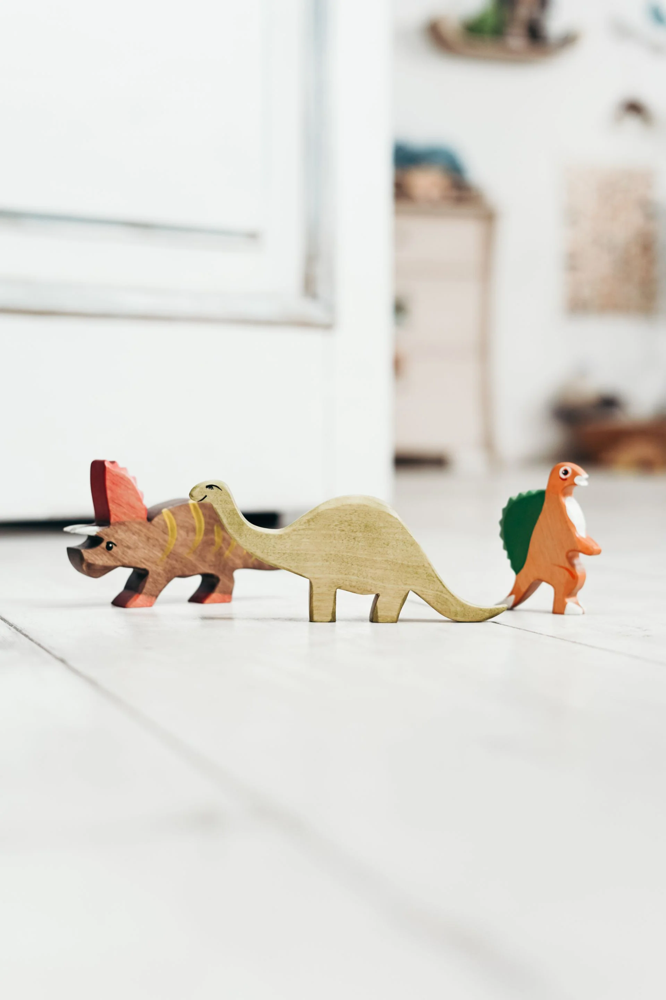

Imagem ilustrativa · não retrata o local ou a equipe
Imagem ilustrativa · não retrata o local ou a equipe01 / ABA e terapias integradas · José Bonifácio
Crianças compreendidas, famílias acolhidas.
Clínica Recriança. A Recriança é uma clínica de ABA e terapias integradas em José Bonifácio, com psicologia, fonoaudiologia, terapia ocupacional e psicopedagogia, atendendo por convênios e de forma particular.
- ABA
- Terapias integradas
- José Bonifácio
02 / Conheça a proposta
Terapias integradas em José Bonifácio.
Intervenção ABA
Núcleo do trabalho da clínica, apresentado no perfil como Clínica ABA – Autismo. A condução é definida pela equipe após avaliação.
Equipe multidisciplinar
Psicologia, fonoaudiologia, terapia ocupacional e psicopedagogia no mesmo endereço, como a clínica lista na bio.
Convênios e particular
A clínica informa que atende por convênios e de forma particular. Consulte as condições pelo WhatsApp.
Orientação às famílias
No Instagram, a clínica publica conteúdo sobre comportamento e comunicação para pais e responsáveis.
Comece aqui
Fale pelo WhatsApp para conhecer a equipe e entender como funciona o primeiro atendimento.
 Imagem ilustrativa · não retrata o local ou a equipe
Imagem ilustrativa · não retrata o local ou a equipe03 / Trajetória & cuidado
A Recriança nasceu para dar preparo, acolhimento e direção.
Segundo a própria clínica, a Recriança nasceu da realidade de crianças incompreendidas por falta de preparo, acolhimento e direção. Hoje, a equipe reúne diferentes áreas em um só lugar, na Praça Manoel São Oliveira, em José Bonifácio, e o perfil da clínica reúne mais de 11 mil seguidores.
- Clínica ABA – Autismo, conforme o perfil
- Equipe com psicologia, fono, TO e psicopedagogia no mesmo endereço
- Atendimento por convênios e particular
- Nota 5,0 nas avaliações do Google

Imagem ilustrativa · não retrata o local ou a equipe04 / Seu próximo passo
Vamos conversar?
José Bonifácio/SPConversar pelo WhatsApp ↗
Ver mapa do endereço +
Consulte horários, disponibilidade e condições pelo WhatsApp.
ABA e terapias integradas · José Bonifácio